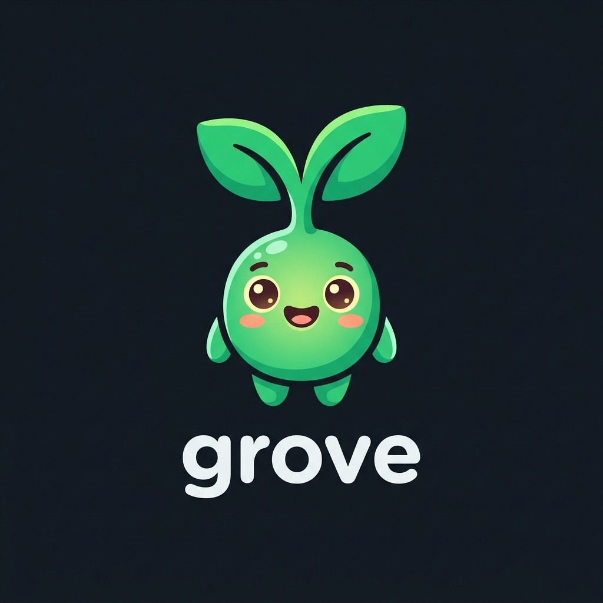
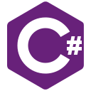

One binary to give any coding agent byte-precise, AST-aware tools for any codebase. Stop burning tokens on whole-file reads and regex grep.
Median Context Tokens
WASM Grammars
CLI + MCP Server

Watch an agent answer structural questions with Grove — zero grep, zero whole-file reads.

Agents burn tokens and round-trips grepping and reading whole files to answer structural code questions. Grove replaces that with one symbol at a time.
Outline a 2,000-line file into a compact skeleton. Retrieve exact symbol bodies via source without dumping entire files into context.
Every query carries a stable symbol-id handle (<lang>:<path>#<name>@<line>) that the agent passes forward across turns.
The same static Rust binary drives both a developer human CLI (grove <verb>) and an agent MCP server (grove serve).
Organized around the 6 phases of an agent's working loop: Orient, Find, Read, Locate, Trace, and Verify.
Generates a file definition skeleton. Gives the agent structural overview without reading whole files.
class Server 12:0 py:src/server.py#Server
def __init__ 14:4 py:src/server.py#Server.__init__
def handle_request 31:4 py:src/server.py#Server.handle_request
def main 88:0 py:src/server.py#mainNot an LSP. Grove is the cheap syntactic layer beneath where an LSP's semantics begin — complementary, not competitive.

Evidence-first evaluation from is-grep-enough comparing text search, Grove, and native LSPs across 10 large repositories.
 L4 · Redis
"I'm studying how Redis produces a point-in-time snapshot of the dataset to disk without blocking the server... Show me how these cooperating pieces fit together."
L4 · Redis
"I'm studying how Redis produces a point-in-time snapshot of the dataset to disk without blocking the server... Show me how these cooperating pieces fit together."
 L5 · TypeScript
"I need to understand the full journey from source text to emitted JavaScript and diagnostics... Walk me through that whole flow and how the stages connect across the modules involved."
L5 · TypeScript
"I need to understand the full journey from source text to emitted JavaScript and diagnostics... Walk me through that whole flow and how the stages connect across the modules involved."
 L5 · Bitcoin
"I need to understand the full journey of a locally submitted transaction from the RPC that receives it to the bytes announcing it going out to peers... Walk me through that whole flow and how the stages connect."
L5 · Bitcoin
"I need to understand the full journey of a locally submitted transaction from the RPC that receives it to the bytes announcing it going out to peers... Walk me through that whole flow and how the stages connect."
 L5 · Django
"I'm planning a change to how persisting a model instance interacts with the database, so I need to understand the full journey of saving a single object... walk me through that whole flow and how the stages connect."
L5 · Django
"I'm planning a change to how persisting a model instance interacts with the database, so I need to understand the full journey of saving a single object... walk me through that whole flow and how the stages connect."
 L5 · Laravel
"I need to understand the full journey of an event through the system. Starting from firing the event, then how its listeners are resolved... walk me through that whole flow and how the stages connect."
L4 · Redis
"I'm studying how Redis produces a point-in-time snapshot of the dataset to disk without blocking the server... Show me how these cooperating pieces fit together."
L5 · Laravel
"I need to understand the full journey of an event through the system. Starting from firing the event, then how its listeners are resolved... walk me through that whole flow and how the stages connect."
L4 · Redis
"I'm studying how Redis produces a point-in-time snapshot of the dataset to disk without blocking the server... Show me how these cooperating pieces fit together."
On L5 cross-cutting architecture traces, regex grep balloons out of control. TypeScript L5 baseline used 2.43M tokens, while Grove completed the trace using just 570K (4.3× cheaper).
Text search drifts on dense traces (baseline dropping to 0.80 on L5 C++). Grove consistently hits 1.00 perfect grounding (Redis, Django, TS, Spring-Boot), verifying every citation accurately.
Native LSPs offer semantic precision but require massive warm-up (e.g., 46 mins to compile Redis DB). Grove loads structural WASM grammars instantly, bypassing heavy indexers.
Official Tree-sitter WASM grammars loaded dynamically from a hosted registry.
 Python
Python Rust
Rust TypeScript
TypeScript Go
Go Java
Java C++
C++ C
C
C# Ruby
Ruby PHP
PHP Bash
Bash JavaScript
JavaScript CSS
CSS HTML
HTML JSON
JSON Haskell
Haskell